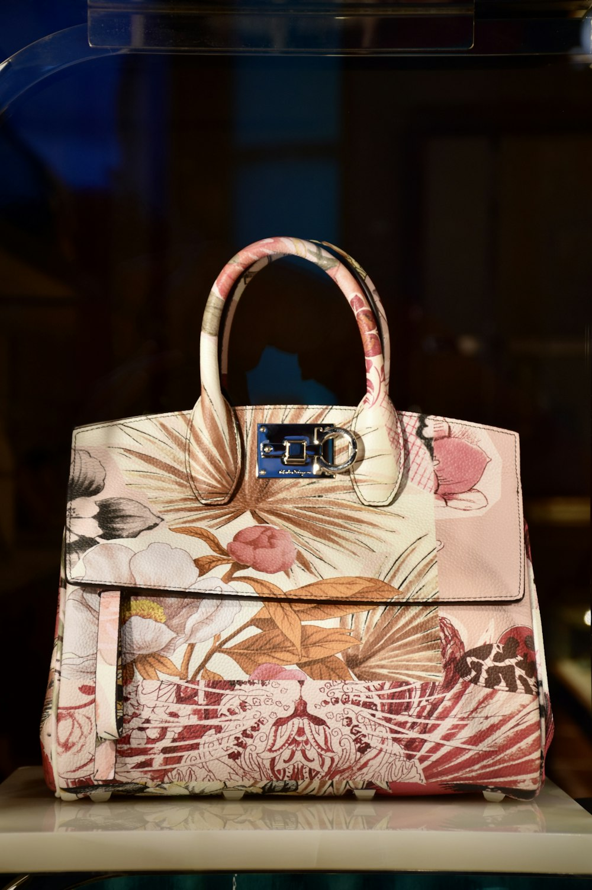

1. The Fatal Shortcoming of Commercial Die-Cast Zamak (Pot Metal)
In the contemporary luxury marketplace, an astonishing 90% of designer handbags employ hardware molded from zinc-aluminum alloys commonly known as Zamak (pot metal). Commercial manufacturers favor Zamak because it melts at a low 380°C, allowing cheap high-speed automated injection molding.
However, Zamak possesses microscopic crystalline brittleness. Under repetitive shear torque—such as the sudden downward tug on a shoulder strap D-ring or the snap of a briefcase push-latch—Zamak hardware suffers internal micro-fractures. Once the paper-thin, flash-plated decorative coating wears away, zinc reacts with atmospheric oxygen, forming chalky white corrosion and snapping without warning.
2. The Classical Sand-Casting Process for CuZn37 Cartridge Brass
At IvorySatchelRidge, every buckle, swivel snap, turn-lock, and stud begins as virgin CuZn37 brass alloy (63% pure copper, 37% zinc)—the exact metallurgical formulation historically utilized for marine navigational instruments and precision clockwork.

Our foundry utilizes traditional green-sand casting moulds prepared from ultra-fine silica sand and natural bentonite clay. Molten brass is heated in graphite crucibles to 1,050°C and poured by hand. The slow thermal cooling within the sand mold ensures a dense, homogenous molecular grain structure completely devoid of the micro-porosity and air pockets that plague die-cast zinc.
3. Deep Metallurgy Comparative Data Table
Metallurgical Comparison: Sand-Cast Solid Brass vs. Commercial Zamak-5
| Metallurgical Property | Foundry Sand-Cast Solid Brass (CuZn37) | Die-Cast Zinc Alloy (Zamak-5) |
|---|---|---|
| Melting Point | 1,050°C (High thermal and structural density) | 380°C (Low melting point for cheap molding) |
| Tensile Yield Strength | 410 – 520 MPa (Exceptional load resistance) | 220 – 280 MPa (Prone to brittle shear failure) |
| Weight & Density | 8.44 g/cm³ (Substantial, satisfying heft) | 6.70 g/cm³ (Hollow, lightweight feel) |
| Corrosion Behavior | Forms a protective noble golden patina; no rot | Develops white powdery zinc oxide corrosion |
| Plating Adhesion | Direct galvanic bonding without blister peeling | Requires fragile copper flash coat; peels easily |
4. Galvanic Metallurgy: 5-Micron Hard Palladium & 24K Gold Plating
While bare solid brass develops a stunning warm patina over time, our atelier also offers two noble electroplated finishes: hard Palladium (a platinum-group precious metal with unmatched scratch resistance) and 24-Karat Heavy Gold.
Mass-produced fashion bags utilize 'flash plating' measuring a mere 0.1 to 0.25 microns in thickness, which rubs off within eighteen months of use. In contrast, IvorySatchelRidge subjects every solid brass component to a triple-stage electro-chemical deposition process yielding a monumental 5.0-micron coating thickness:
- Stage 1: Alkaline Copper Barrier (2.0 μm): Creates an atomic-level leveling coat that seals microscopic substrate anomalies.
- Stage 2: High-Purity Palladium Undercoat (1.5 μm): Imparts immense surface hardness (HV 400 on the Vickers Scale) to prevent denting.
- Stage 3: Precious Metal Topcoat (1.5 μm): 99.9% pure 24K gold or pure mirror palladium bath operated under precise 45°C galvanic current control.
5. Micro-Mechanical Engineering: Compression Springs and Pivot Latches
A luxury satchel lock must open with the crisp, muted precision of a high-end Swiss timepiece. Inside our proprietary push-key closures and swivel clasps, we utilize custom-coiled AISI 302 stainless steel springs passivated against atmospheric moisture.
Every pivot pin is machined from solid brass stock on high-precision jeweler lathes to a clearance tolerance of ±0.015 millimeters. This eliminates all lateral play and wobble while ensuring effortless tactile engagement across decades of daily operation.
6. Salt Fog Corrosion Resistance and 100,000-Cycle Latch Testing
Before entering production, our hardware designs undergo standardized ASTM B117 salt fog environmental testing. While standard commercial hardware exhibits blistering and pitting within 24 hours of exposure to a 5% sodium chloride fog, our 5-micron palladium and solid brass components pass 500 hours of continuous exposure with zero corrosion or surface tarnishing.
In mechanical bench testing, our push latches are cycled 100,000 consecutive times under a 20-Newton load without a single spring failure or mechanical jam—equivalent to opening and closing your satchel ten times per day for twenty-seven consecutive years.
7. Hand-Filing, Emery Burnishing, and Jewel-Grade Polishing
Once cast, each piece of raw brass arrives at our metalsmith's bench rough and frosted. The artisan employs Swiss-made needle files to remove mold parting lines, followed by six progressive grits of emery paper (from 400 to 2,500 grit). Finally, the piece is polished on high-speed cotton wheels loaded with Tripoli compound and jewelers' rouge until it reaches a distortion-free mirror luster.
8. Metallurgy & Lock Hardware FAQ
Silver reacts rapidly with atmospheric sulfur, turning black within weeks. Nickel can cause severe skin allergies upon contact. Palladium is a noble platinum-group metal that is completely hypoallergenic, intensely scratch-resistant, and chemically immune to atmospheric oxidation.
Because solid brass is solid metal throughout (unlike plated pot metal), any surface scratch can be effortlessly polished away on a jeweler's wheel without exposing an unsightly grey base metal underneath.
9. Optical Emission Spectroscopy & Alloy Purity Testing
To ensure that every brass casting satisfies our uncompromising structural standards, our foundry subjects each melt batch to Optical Emission Spectroscopy (OES). Commercial brass scrap frequently contains trace contaminants such as lead, bismuth, and antimony, which segregate at crystalline grain boundaries during cooling and induce intergranular brittleness.
IvorySatchelRidge mandates a maximum impurity threshold of less than 0.02% total trace elements. Our proprietary CuZn37 alloy is cast exclusively from high-purity electrolytic copper cathode (99.99% Cu) and distilled zinc ingots (99.995% Zn). This metallurgical purity ensures optimal ductility during hand filing and guarantees that our hardware will never crack under sudden impact or cold weather exposure.
10. The Micro-Physics of 5-Micron Galvanic Deposition
The electroplating of noble metals is governed by Faraday's laws of electrolysis:
Inside our electroplating tanks, solid brass components act as the cathode while high-purity palladium anodes supply precious metal ions under a calibrated current density of 0.8 A/dm2 at 48°C. Deposition proceeds at a meticulous rate of 0.1 microns per minute over a 50-minute immersion cycle, yielding a crystalline epitaxial bond with zero internal tensile stress.
11. Crystalline Grain Boundary Thermodynamics in Sand Casting
The superior durability of sand-cast CuZn37 cartridge brass over automated high-pressure die-cast Zamak is deeply rooted in crystalline metallurgy. When molten brass cools slowly within the porous green-sand mold, the copper and zinc atoms form an alpha-phase face-centered cubic (FCC) crystal lattice interspersed with fine beta-phase needles.
This dual-phase micro-structure provides an ideal balance of hardness and exceptional tensile ductility. Under severe shock loading, the alpha-phase crystals absorb energy through microscopic slip-plane dislocation movements rather than propagating brittle cleavage cracks. This ensures that an IvorySatchelRidge strap buckle can survive severe drop impacts on hard granite pavements without ever shattering or deforming.
12. Horological Tolerances: Hand-Turned Brass Pivot Screws
Every lock plate and combination latch on our briefcases is assembled using hand-turned solid brass screws featuring classical Swiss horological slot profiles. Rather than relying on stamped sheet metal tabs or friction pins that loosen over time, our screws are cut with M2.5 metric threads on precision jeweler lathes and locked in place with organic resin thread-sealants.
This allows our conservators to easily unscrew the hardware assembly during restorative polishing, replace internal stainless steel springs if necessary, and re-torque the chassis back to original factory tolerances fifty years after initial assembly.
13. Vickers Micro-Hardness Spectroscopy & Wear Dynamics
To quantify the scratch resistance of our hardware finishes, our metallurgical laboratory conducts calibrated Vickers Hardness Testing (HV) using diamond pyramid indenters under a 100-gram load.
Standard flash-plated fashion hardware registers a meager HV 80 to 110, resulting in noticeable surface gouging within months of contact with keys or zipper pullers. In contrast, our 5.0-micron hard palladium electroplating achieves an extraordinary HV 420, providing an impenetrable diamond-hard shield that resists scratching, denting, and mechanical abrasion across decades of active daily use.
Feel the Weight of Solid Brass Engineering
Experience handbag hardware crafted like fine jewelry, built to endure generations without compromise.